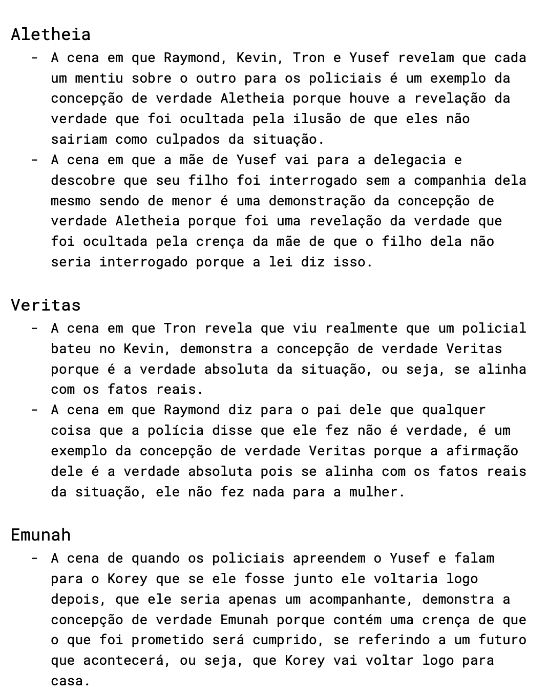
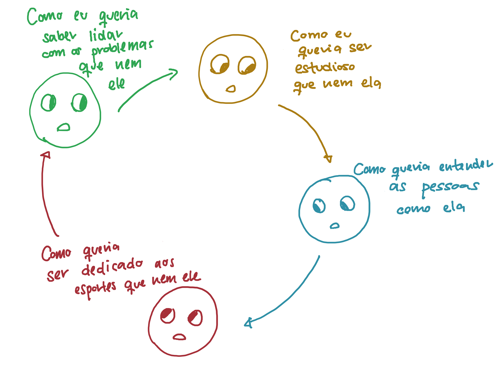

Experiência Criativa
Durante esse semestre nas aulas de Experiência Criativa, realizamos vários projetos em grupo. O primeiro, que foi um jogo, eu fiquei responsável pela criação dos cenários.
Cada um dos desenhos apresentados abaixo foi inspirado por lugares que podem ser encontrados na PUCPR.


Para o aplicativo multimídia, meu grupo construiu um planner.
Neste projeto eu fiz a página "Movie List", como pode ser observado abaixo.

No último projeto realizado, fizemos um site de turismo para a cidade de Agudos do Sul.
Antes de tudo, planejamos como o site seria, usando papel kraft e canetas.

Logo depois, já começamos a realmente programar nosso site. Eu programei a página dos restaurantes.

Algo que eu gostei bastante de fazer esse semestre foi a atividade de fazer um personagem no Processing.
Me ajudou a compreender um pouquinho mais sobre Java e também me desafiou bastante, já que eu nunca tinha utilizado o Processing antes.
Abaixo está meu personagem e o código que eu fiz para fazer ele.


Filosofia
Meu semestre em Filosofia foi marcado por reflexões perante ao futuro, principalmente em relação a educação e meu futuro profissional.
Isso se deu principalmente ao TDE 1, porque fui apresentada para o "Programa Vida Universitária".
A seguir está um texto feito por mim para esta tarefa e também um mapa mental.


O TDE 2 foi o que eu mais gostei de fazer, porque envolveu assistir um episódio de uma série e analisá-lo.
Foi uma boa atividade para entender novos conceitos sem ser de um jeito monótono.
Abaixo coloco um pedaço da análise que fiz.

Para o TDE 3 realizei também outra análise. Com esta tarefa consegui refletir sobre a importância da identidade de cada um.
Fiz uma imagem para essa atividade que gosto bastante.

Sistemas Ciberfísicos
Nas aulas de Fundamentos de Sistemas Ciberfísicos, a parte mais interessante foi aprender sobre arduínos.
Foi bem desafiante porque foi a primeira vez que mexi com algo do tipo.
A seguir coloco quatro exercícios que me ajudaram a entender sobre este tema.


Raciocínio Algorítmico
Em Raciocínio Algorítmico, o trabalho mais desafiante foi o da Máquina de Vendas, isso porque toda a matéria do semestre foi necessária para realizá-lo.
Abaixo está três exemplos do programa que fiz.


Lógica Matemática
Nas aulas de Resolução de Problemas com Lógica Matemática, desenvolvi habilidades de soluções que antes não possuía.
Os exemplos abaixo referentes a tabela verdade, manipulação sintática e formalismo e inferência, me ajudaram a entender como programar de um jeito mais eficiente.